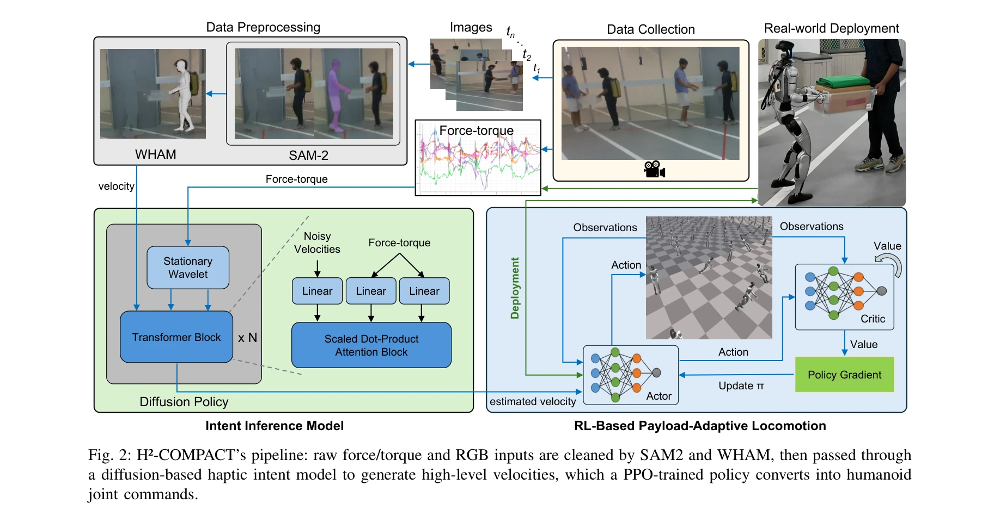
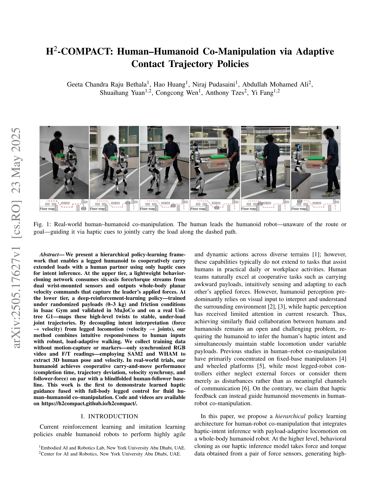

저자: Geeta Chandra Raju Bethala, Hao Huang, Niraj Pudasaini, Abdullah Mohamed Ali, Shuaihang Yuan, Congcong Wen, Anthony Tzes, Yi Fang | 날짜: 2025-05-23 | URL: https://arxiv.org/abs/2505.17627

Fig. 2: H²-COMPACT’s pipeline: raw force/torque and RGB inputs are cleaned by SAM2 and WHAM, then passed through
힘각 센서 기반 haptic intent inference와 reinforcement learning 기반 locomotion policy를 계층적으로 결합하여 인간-휴머노이드 협력 물체 운반을 실현한다.

Fig. 1: Real-world human–humanoid co-manipulation. The human leads the humanoid robot—unaware of the route or
Fig. 2: H²-COMPACT’s pipeline: raw force/torque and RGB inputs are cleaned by SAM2 and WHAM, then passed through
총평: Haptic-based intent inference와 force-adaptive legged locomotion의 계층적 결합으로 인간-휴머노이드 협력 물체 운반의 새로운 패러다임을 제시하며, motion-capture free 데이터 수집과 sim-to-real 검증을 통해 실용성 높은 연구로 평가된다.